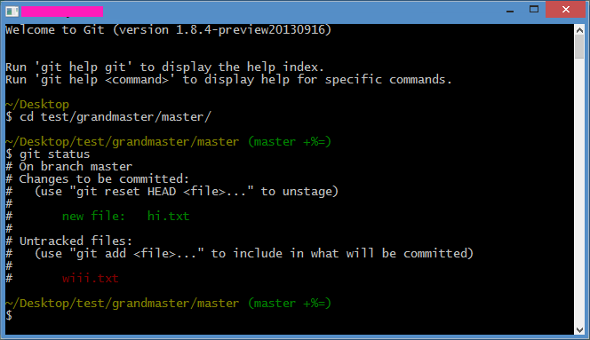

GitHub Pages para proyectos
Pasos simples para crear un GitHub Pages para proyectos/por repo (y no para usuario u organización) además de cositas varias.
Los pasos estan tanto para CLI como para GitHub for Windows (TortoiseGit es "similar" a Git CLI) y orientado para principiantes en esto de Git, que buscan facilidad y no tanto "lío" o "vueltas". Aunque si estas cómodo con SVN podes usarlo (ver clientes en GitHub).
Abreviaciones y otros vocabularios:
- git CLI
- El Git que usas en una terminal/linea de comandos.
- GW
- GitHub for Windows.
- Tortoise
- TortoiseGit.
- Server
- Donde se "hostean" las cosas (como GitHub). En Git esto no existe, pero asi se entiende mejor para los principiantes (repositorio remoto).
- "Central server" si venis desde SVN.
- repo
- Para hacerla más fácil, mirar "repo" como "repositorio principal/remoto" o "server" (ver definición).
- origin
- Así se denomina al "repositorio remoto" original y por convención el repositorio centralizado 'primario'.
- c-p
commitseguido depush
Programas para Windows
En un principio, tener Git en Windows era mucho lio (porque fue creado por y para Linux) pero ahora hay varias opciones. Usualmente, si vas a usar solo GitHub, se recomienda GW. Pero si queres usar Git para otras cosas (como crear "servers" localmente y jugar ahi) recomiendo TortoiseGit + msysgit (git CLI) en lugar de GW:
- te sirve para varias cosas y no solo para GitHub ("lee" el protocolo
github://) - no tenes que pelear con el PATH por si queres usar git CLI (se instala en
%appdata%y no podes añadir solobin\) - msysgit viene con "git Bash"; una CLI re linda con colores que además te muestra en qué
branchestas; ademas de personalizarla con.bashrc.

Crear repositorio
En GitHub, crear un repositorio con el nombre que se quiera. Podes iniciar sesión e ir a https://github.com/repositories/new o apretando en el "librito".
"Activar" GitHub Pages
Se activa magicamente creando un branch llamado gh-pages.
Desde web es apretando en branch master; en GW es apretando arriba donde dice master. Buscar gh-pages y apretar opción de crear (create branch). Con CLI sería (previamente clonado, mirar abajo):
$ git checkout --orphan gh-pages # branch local
Info
El --orphan crea un branch separado del resto del repo (sin parents). Se crea primero localmente, después se manda al origin (pasos mas abajo).
Pasarlo al desktop (para trabajar)
Desde GitHub apretar Clone in desktop (que lo tomará GW o Tortoise) o desde CLI:
$ git clone https://github.com/user/repo_lindo.git
Preparar branch gh-pages
Cambiar a gh-pages. En CLI, si se usó el comando anterior (git checkout --orphan gh-pages) se cambia automáticamente, sino git checkout -b gh-pages para cambiar y crear un branch local llamado "gh-pages".
Info
Al cambiar branches, Windows Explorer "refresca" la carpeta donde está con el contenido del branch seleccionado.
Eliminar todos los archivos que aparezcan (porque son del master y no los queremos) y hacemos c-p.
$ git rm -rf . # eliminamos todo $ git commit -m "Iniciar gh-pages" $ git push -u origin gh-pages # mandamos branch al origin
gh-pages como default y eliminar master
Esto es opcional, depende de tu workflow o idea de uso. Si solo se va a usar gh-pages, se puede usar como default y eliminar el branch master.
Para ponerlo como default (y no usar el master), en GitHub, ir a settings > (settings >) Default branch y seleccionar gh-pages.
Para eliminar el master hay que tener el gh-pages como default. Después ir al listado de branches y apretar en Delete branch. Con CLI:
$ git branch -d master # eliminar local $ git push origin :master # eliminar de repo
It's alive! (Archivo de prueba y subida)
Crear un index.html, lo añadimos y hacemos c-p.
$ git add . # añade todo $ git commit -am "Primer commit a pages" $ git push origin gh-pages
(el -a es abreviatura de add)
Esperar unos minutos y ver si se subió el index en: http://user.github.io/projectName/
Dominio propio
Como seguramente no vas a querer entrar a http://user.github.io/projectName/ porque es muy largo o queda poco profecional, GitHub permite ponerle un dominio/subdominio.
Solo basta con poner un archivo CNAME que contiene el dominio/subdominio que se quiera usar, en el root de gh-pages y cambiar los DNS del dominio en el host/registrar:
-
Con un root domain (www.example.com): crear un nuevo
A recordcon la IP a 204.232.175.78. -
Con un subdominio (sub.example.com): crear un
CNAME recordque apunte al subdmonio del usuario en GitHub (user.github.io). Esto deja que los DNS se adjusten automáticamente al IP de GitHub; se puede usar unA recordpero no se adjusta automáticamente.
404 pages! (Todos amamos los error pages)
También es fácil: poner un 404.html en el root de gh-pages y listo (no te olvides de agregarlo y c-p).
Cambios
- Reescrito para ser mas explicativo.